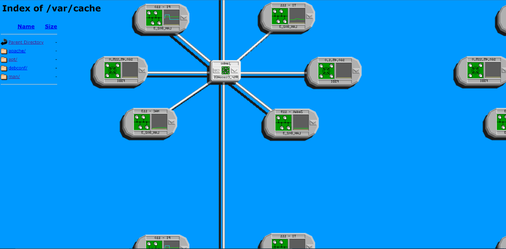

home
home
 page_1
page_1
 citations
citations
Home - Notepad
File Edit Search
Life Sharing, by Eva and Franco Mattes, poses a question that has become an increasingly obvious problem in today’s society: privacy and technology. For three years, the couple released all the contents of their computer to the public including bank statements, emails, files, etc. They even went as far as having their own phones tapped and wore GPS transmitters that would disclose their recent locations. The goal was to show how privacy fares in the face of technology, which has proven to be extremely poor. With the highly customizable aspect of technology paired with its easy connection to the rest of the world, Eva and Franco Mattes prove that previous ideas of privacy aren’t viable options anymore. One could even argue that with how custom each bit of technology is to the user that modes of technology eventually become an extension of a person. Thus, questions about privacy have to constantly be reassessed in the face of technology and its blurring of the self and the internet.
 Start
Start